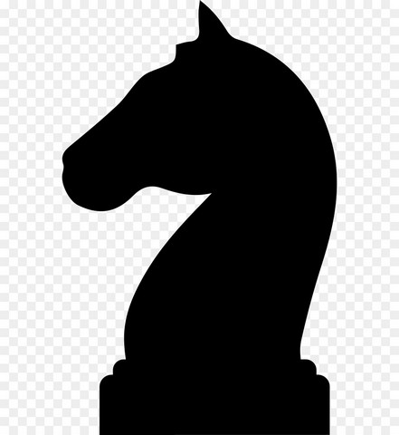
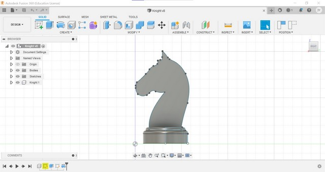

Computer Aided Design is the use of computers to aid in the creation, modification, analysis or optimization of a design. It is a way to digitally create 2D and 3D models of real-world products before they are manufactured
We learnt how to used Fusion 360 which is an integrated CAD, CAM and CAE software that can consolidate your product development process. Using Fusion 360, we learnt how to create sketches.
Here are my first sketches on Fusion 360
Next, we learnt about the building blocks of Fusion 360 which are the sketches, bodies and components. Sketches are two dimensional and are the building blocks of all models. Bodies are created from sketches, are solids and can be combined to form other bodies. Components are made up of bodies and sketches and can also be combined to form other components.
We also learnt how to use the extrude function in Fusion 360
Here is my nametag that was created using the extrude function
We learnt how to use the revolve tool as well which we utilised to create a chess piece knight in fusion 360. We started off the knight with a canvas image that we used to trace a sketch of the knight.
 Here is the final design for my knight chess piece